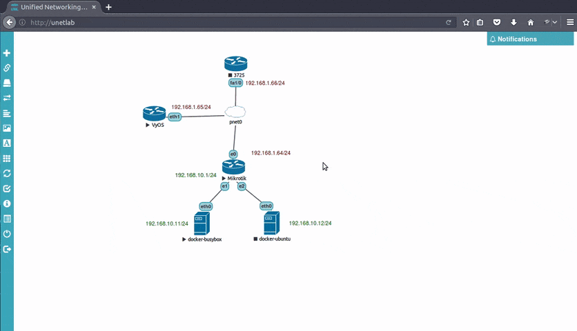

Overview
UNetLab-X-Integration is a URL handler for UNetLab on Linux.
Support the following URL schemes:
telnet://capture://docker://vnc://(via Vinagre)
Tested with Google Chrome, Chromium and Firefox.
Demo

How to install
If you have Ubuntu, Debian, Linux Mint and other Debian-based distros you may simply download and install the latest .deb package at https://github.com/SmartFinn/unetlab-x-integration/releases.
Alternatively, you can install it from terminal with the following command:
wget -qO- https://raw.githubusercontent.com/SmartFinn/unetlab-x-integration/master/install.sh | shThis method works on other Linux distros too. Tested on Arch Linux, Manjaro, Fedora, openSUSE and potentially works with other systems.
If your Linux distribution is not supported yet, don't give up, try Manual install or create new issue.